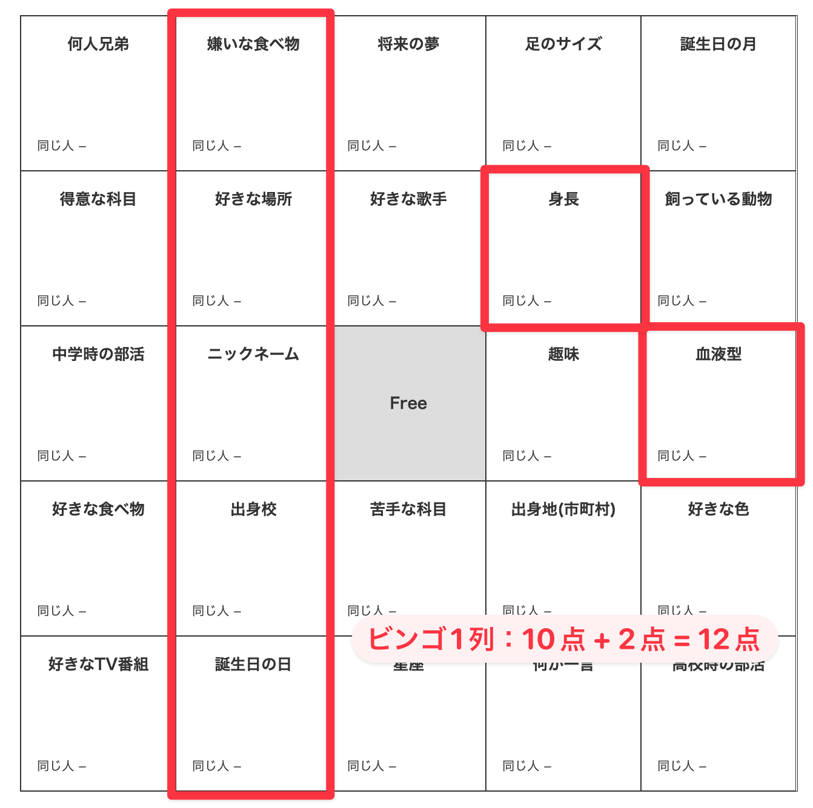

1. アイスブレイク
◎共通点探し
- 【ルール】
-
- 配布する紙に記載されている25マスの項目（FREE以外）について、各自回答を記入する。
- 合図があったら、自由に立ち歩いて回答が共通のクラスメイトを探し、見つけたら「同じ人」の欄に名前を記入する。
- 縦横斜め1列揃ったらビンゴ。一番多くの列が揃った人が優勝。
- 制限時間は15分。（延長の可能性あり）
- 1対1で会話するようにしてください。また、周りの人に自分の回答がバレないように、なるべく小声で話してください。
- お互いの紙を見せることは禁止です。口頭で順番に聞いていってください。
- なるべく多くの人と会話できるように、一人につき聞く項目は3個までとします。別の人と会話をした後で戻ってくるのはOKです。
- 【得点計算方法】
-
- ビンゴ1列：10点
- ビンゴ以外の項目：1点

◎正解の無いクイズ
- 【ルール】
-
- 1チーム4名のチーム戦。
- こちらが出す「正解のないクイズ」の答えを、チームで話し合って考える。
- 制限時間は5分。（延長の可能性あり）
- 周りのチームにバレないように、なるべく小声で話してください。
- 時間内に発表者を決めてください。
- 発表後、一番良い答えを出したチームに投票。（自分が絶対に一番！と思うなら入れても良い）
- 一番票数を集めたチームの勝ち。